List the workload
Explain the applications, storage and hardware you already use.
BUSINESS INFRASTRUCTURE
A server in a spare room may work for a while. As a business grows, power, connectivity, access and recovery become harder to leave to chance. Data center services start with understanding what you need to run and how you need to look after it.
Ask about data center ↗WHERE IT HELPS
HOW IT WORKS
A simple view of a typical setup.
The exact design is agreed for your service.

LET’S WORK IT OUT
Explain the applications, storage and hardware you already use.
Discuss the available hosting or colocation options and their operating boundaries.
Agree on access, migration, backup and testing before making changes.
BEFORE WE TALK
You don’t need a technical brief. Start with what you know; we can talk through the rest.
QUESTIONS WE CAN HELP WITH
These are different arrangements. Describe your needs so the available option and the responsibilities it includes can be made clear in the proposal.
Do not assume they are. Ask for the backup scope, retention, recovery process and any additional charges in writing.
HAS NETWORKS · SHERGARH, MATHURA
Share your location and what you’re trying to do. We’ll discuss availability, scope and a suitable next step.